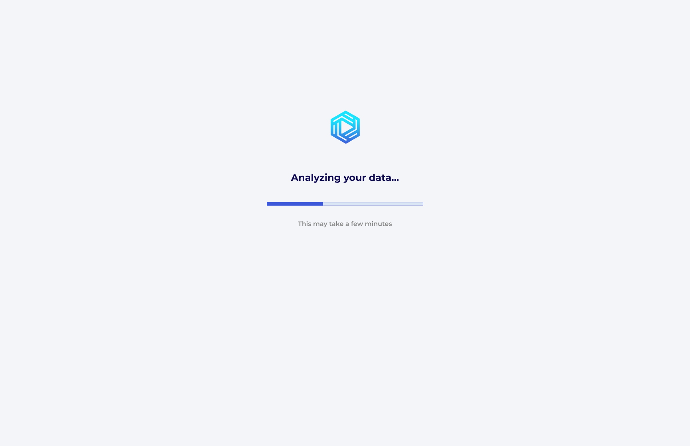

Case Study · Elite Global AI
Desktop-first, responsive mobile
Elite Global AI
Designing an onboarding flow that feels like a conversation
Elite Global AI is a 14-screen onboarding and payoff experience for an AI job-matching product.
The flow collects only the minimum data needed to make the matching feel intelligent, personal, and trustworthy
while still working cleanly on desktop and mobile.
01 — Overview
The product consists of 14 screens in total: 10 onboarding screens and 4 payoff screens.
The opening set gathers the minimum viable profile data; the final set shows the AI processing that data,
returning a match, and closing the loop with job results.
02 — The Brief
Elite Global AI was designed to respond to a familiar problem: job applications often feel fragmented,
repetitive, and disconnected from the actual value the platform is trying to deliver.
The matching system needed candidate information, but the interface had to make that data collection feel
conversational rather than burdensome.
The brief was to build a flow that feels like a recruiter-led intake:
ask the right questions in the right order, minimise friction, keep the user oriented,
and make sure the final recommendation feels earned.
The design constraints were clear: desktop-first, responsive on mobile, one question at a time,
skip available throughout, and only the minimum data needed for useful matching.
03 — The Core Design Decision: Conversational UI
The strongest decision in the flow is the choice to present it as a conversation instead of a traditional form.
The prompt language, the spacing, and the progressive reveal of fields all work together to make the experience
feel guided.
The interface does not ask the user to fill a form. It asks them to answer a sequence of simple questions,
one at a time, like they are talking to a recruiter who already knows what matters.
That shift matters. A form feels transactional. A conversation feels supported.
For first-time users, especially in a hiring context, that difference determines whether they keep going.
04 — The Sequencing Strategy
The sequencing uses a simple foot-in-the-door structure. The early screens ask for easy, low-friction information
before the flow moves into more personal and more valuable data.
How the flow is staged
Phase 1
Identity
Steps 1 to 2 establish who the user is and start the relationship with very low effort.
Phase 2
Preferences
Steps 3 to 7 gather the user’s career context, working preference, industry, and employment type.
Phase 3
Extras
Steps 8 to 10 collect the more specific details that help the AI return a sharper match.
05 — Screen-by-Screen Analysis
Screen 1 — Name Input
The prompt: "Let's start with your name"
The first screen does exactly what a good opener should do: it feels easy. Asking for a name is low-friction,
familiar, and personal enough to feel human without becoming intrusive.
The name field also serves a second purpose: it establishes the AI’s tone. The screen is not cold or corporate;
it is welcoming, direct, and quick to answer.
Screen 2 — Document Upload (Empty State)
The prompt: "Upload your CV and certificate"
The empty state turns a potentially dull action into something understandable at a glance. Two dashed upload zones
communicate that the screen expects separate files and that both are equally important.
The Add another file option gives the user a clear sense that the interface can scale beyond the first upload
without making the initial state feel crowded.
Screen 3 — Document Upload (In-Progress State)
The behaviour: CV upload in progress with a visible percentage and time remaining
This state is important because it removes uncertainty. The user can see that the platform is processing the file,
how far along it is, and that the wait is finite.
Small progress cues like this are trust builders. They tell the user the system is active rather than frozen.
Screen 4 — Document Upload (Completed State)
The state: both documents now appear as completed items
Completion state matters just as much as loading state. Listing the uploaded files with delete icons makes the
system feel editable instead of permanent.
The user sees evidence that the platform has accepted their input, and that the flow is advancing.
Screen 5 — Experience Level
The prompt: "How many years of experience do you have?"
Radio options with supporting descriptions make the decision easier. The user is not left to interpret vague labels;
each option clarifies what kind of candidate it represents.
The screen keeps the cognitive load low while still gathering useful screening data for the matching engine.
Screen 6 — Preferred Working Condition
The prompt: "Where would you like to work?"
Remote and Relocate are positioned as clear, mutually understandable options. The wording stays practical,
not vague, which is important in a hiring flow.
If I were iterating this further, I would likely add a hybrid option, but the current structure still communicates
the product’s intent well.
Screen 7 — Preferred Industry
The prompt: "Which industries are you open to?"
Multiple choice is the right pattern here because the user may be open to more than one career path.
The screen makes that flexibility obvious without feeling messy.
The wording keeps the flow aspirational rather than restrictive.
Screen 8 — Employment Type
The prompt: "What kind of employment are you looking for?"
This screen follows the same multi-select logic as the industry screen, which helps the flow feel predictable.
Consistency here reduces friction.
The user understands that the system is learning preferences, not forcing a single answer.
Screen 9 — Salary Expectations
The prompt: "What salary range are you expecting?"
Salary is one of the more sensitive inputs in the flow, so the screen needs to feel calm and unpressured.
A simple numeric input and a short helper line do that job well.
The fact that the question appears late in the sequence also helps. By this point, the user has already received
value and is more likely to answer honestly.
Screen 10 — Professional Links
The prompt: "You can share important links here"
This is the least demanding screen in the flow, and that is intentional.
After the salary question, ending on optional inputs gives the user a sense of relief.
LinkedIn, a personal website or portfolio, and GitHub cover the three most useful public proof points
without making the user feel over-asked.
06 — Interaction Patterns Used Across the Flow
Across the 10 onboarding screens, the design uses a small set of interaction patterns and matches each one to the
kind of information being requested. That discipline is one of the best things about the flow.
Text input
Name and links use text input because they are open-ended and familiar.
File upload with states
The document flow clearly separates empty, active, and completed states.
Radio buttons with descriptions
Experience level is mutually exclusive, so radio buttons are the right fit.
Checkboxes with descriptions
Working condition and industry allow more than one answer when appropriate.

Progress bar
The payoff sequence uses loading states to make the AI's work visible.
Link input
Professional links are structured open-ended inputs, so text fields are enough.
| Screen |
Pattern |
Why it fits |
| Name | Text input | Open-ended, personal, low-friction |
| Documents | File upload with states | Binary action that benefits from feedback |
| Experience | Radio buttons with descriptions | Mutually exclusive choices |
| Working condition | Checkboxes with descriptions | Can support one or more preferences |
| Industry | Checkboxes | Multiple valid selections |
| Employment type | Checkboxes | Multiple valid selections |
| Salary | Numeric text input | Specific quantitative data |
| Links | URL text input | Structured open-ended data |
07 — Step Indicator & Skip: Balancing Commitment and Autonomy
The step indicator and Skip link appear on every screen, and that consistency does a lot of emotional work.
One tells the user how far they have come; the other tells them they still have control.
The step indicator communicates progression without making the user feel overwhelmed, and the Skip link signals that
the user is not trapped. That combination is what keeps the flow feeling collaborative instead of coercive.
08 — Visual Design Language
The visual language is intentionally restrained. The screens rely on soft surfaces, light blue input fields,
rounded controls, and a calm background so that the user stays focused on answering the current question.
| Element |
Decision |
Rationale |
| Background | Soft light grey | Calm, softer than pure white, easy on the eyes |
| Inputs | Light blue tint with no hard border | Modern and calm |
| Prompt | White chat-style bubble | Reinforces the conversational framing |
| Primary CTA | Deep blue pill button | Clear, repeatable, easy to find |
| Progress | Blue dot indicator with active pill | Clear but unobtrusive |
| Skip | Top-right text link | Available without being over-promoted |
09 — The Payoff Sequence: Closing the Loop
Instead of ending with a generic confirmation screen, the flow gives the user a four-screen payoff sequence.
That makes the AI feel active and makes the value of the onboarding visible.
Screen 11 — Analyzing Your Data
The first loading state makes the AI visible. The user can see that the system is doing something with their input
rather than disappearing into a blank wait state.
The copy also sets expectations. If the process takes a little while, the screen has already told the user why.
Screen 12 — Finding Companies That Match Your Profile
This second loading state moves the story forward. The language shifts from analysis to action,
which makes the process feel like the AI is actively working on the user’s behalf.
Two distinct loading states create a stronger sense of momentum than a single spinner ever could.
Screen 13 — Match Result & Optimisation Prompt
The match result is the trust peak of the whole flow. It confirms value first, then introduces a secondary action:
optimisation.
Because the user has already been shown a concrete result, the suggestion to improve the CV and cover letter
lands as helpful advice rather than a sales pitch.
Screen 14 — Job Results
The final screen closes the loop. It does not just list jobs; it frames them as roles the user has a high chance
of landing, which makes the result feel personalised and credible.
The job list is concise, readable, and focused on the facts the user needs to make a decision.
10 — What I Would Do Differently
- Add a hybrid working option alongside Remote and Relocate.
- Standardise the multi-select helper copy so every similar screen uses the same language.
- Consider a salary range input instead of a single figure to reduce pressure on the user.
11 — Conclusion
What makes Elite Global AI worth studying is the way the whole flow stays coherent. Every screen reinforces the same
idea: the AI is working for the user, not the other way around.
The conversational prompts make the intake feel human. The sequencing earns trust before asking for sensitive data.
The loading states make the system visible. The match result delivers a believable outcome. And the final job list
closes the loop on the promise made at the start.
Together, those decisions turn a 10-step form into a guided introduction to a smarter job search experience.